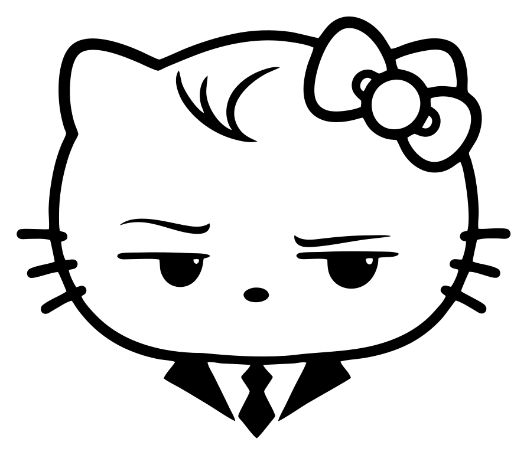

رودی
شوخی نداره.
پیامرسان، ولی با کتوشلوار. مرتب، سریع، و همون رنگی که خودت دوست داری.
دکمههای زیر چت رو بزن. جواب میده، به روش خودش.

رودیرباتسلام. رودیام.۲۱:۴۰
یه پیامرسانم. زیادم حرف نمیزنم.۲۱:۴۰
رنگ خودتو
انتخاب کن.
سه تم و نُه رنگ. رنگی که انتخاب کنی همهجا میاد: دکمهها، لینکها، حباب پیامای خودت، حتی لوگوی رودی.
داخل برنامه: تنظیمات ← تنظیمات گفتگو. با دکمهی + هم رنگ دلخواه خودتو میسازی.
بیداری؟۰۱:۱۰
آره، رنگ جدیدو ببین۰۱:۱۱
وای چه خوشگله۰۱:۱۱
کدوم رنگه؟ rudy.chat۰۱:۱۱
هر رنگی که بخوای.۰۱:۱۲
از داخل برنامه.
چند تا از تمها، همونطور که روی گوشی میبینی.
چیه اصلاً؟
مرتب و ساده
نه شلوغی، نه چیز اضافه. هرچی لازم داری، همونجایی که انتظارشو داری.
هرچی که لازم داری
چت دونفره، گروه، کانال، عکس، ویس و فایل. همهش همینجاست.
رنگ خودت
روشن، تیره یا مشکی واقعی، با نُه رنگ آماده یا رنگی که خودت میسازی.
زود یاد میگیری
اگه قبلاً با یه پیامرسان کار کردی، رودی رو هم بلدی.
روی سرورهای خودمون.
رودی به سرورهای خود رودی وصل میشه. رودی هم حواسش به سرورهاش هست؛ معمولاً با همین قیافه.
سؤالا
چطوری حساب بسازم؟
با شمارهت. یه کد برات میاد، واردش میکنی، تموم. یه دقیقه هم طول نمیکشه.
پولیه؟
نه، مجانیه.
رنگشو چطوری عوض کنم؟
تنظیمات ← تنظیمات گفتگو. یکی از تمهای روشن، تیره یا مشکی رو بزن، بعد رنگتو انتخاب کن. با دکمهی + هم رنگ خودتو میسازی.
دسکتاپ و آیفون چی؟
اول اندروید اومده. دسکتاپ و آیفون پشت سرش میان.
چرا انقدر بداخلاقه؟
بداخلاق نیست. فقط حوصلهی حرف اضافه نداره.